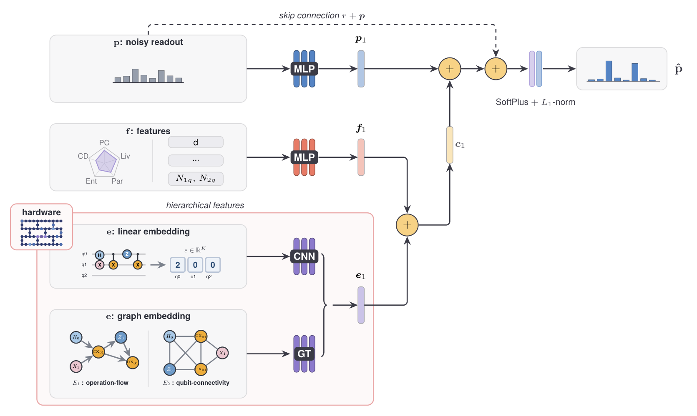
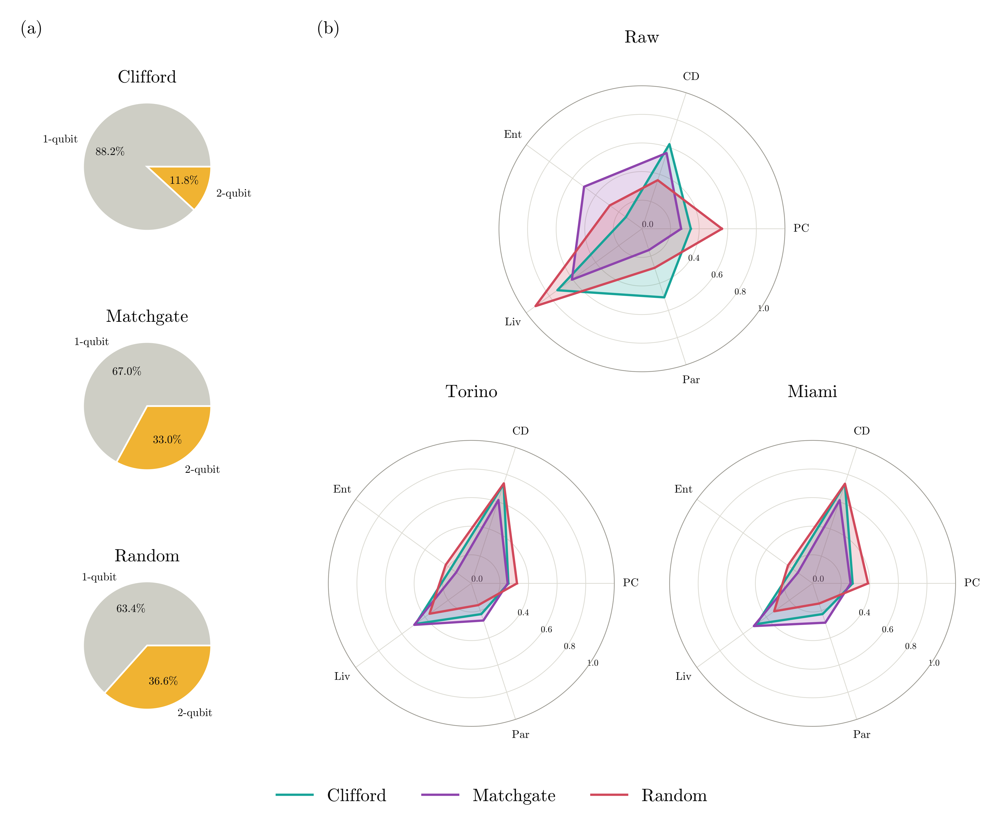
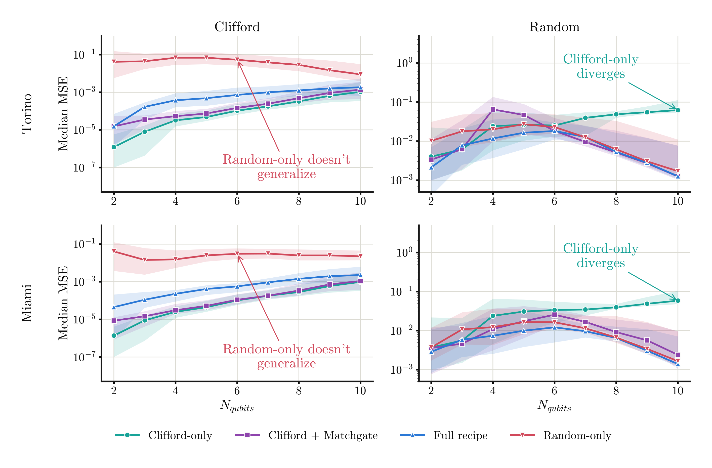
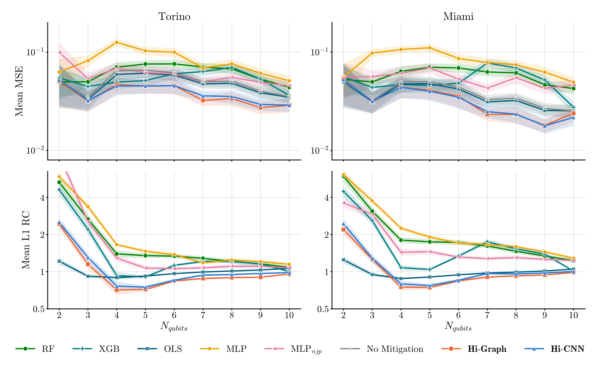
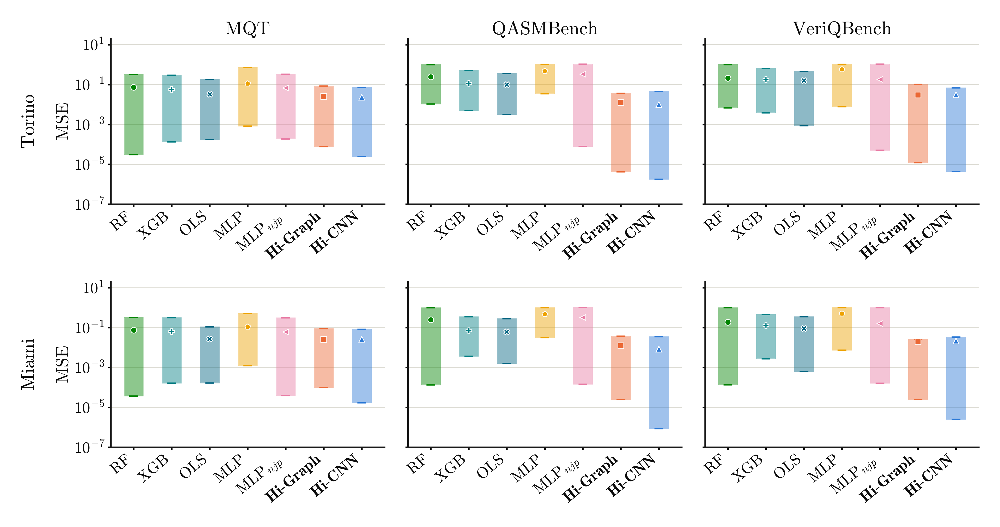
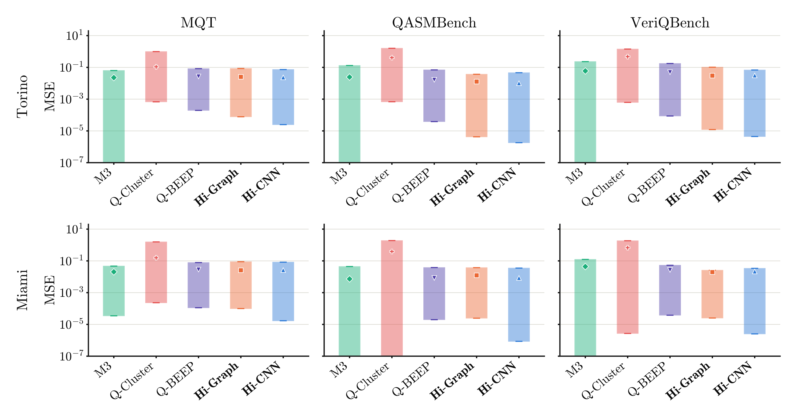
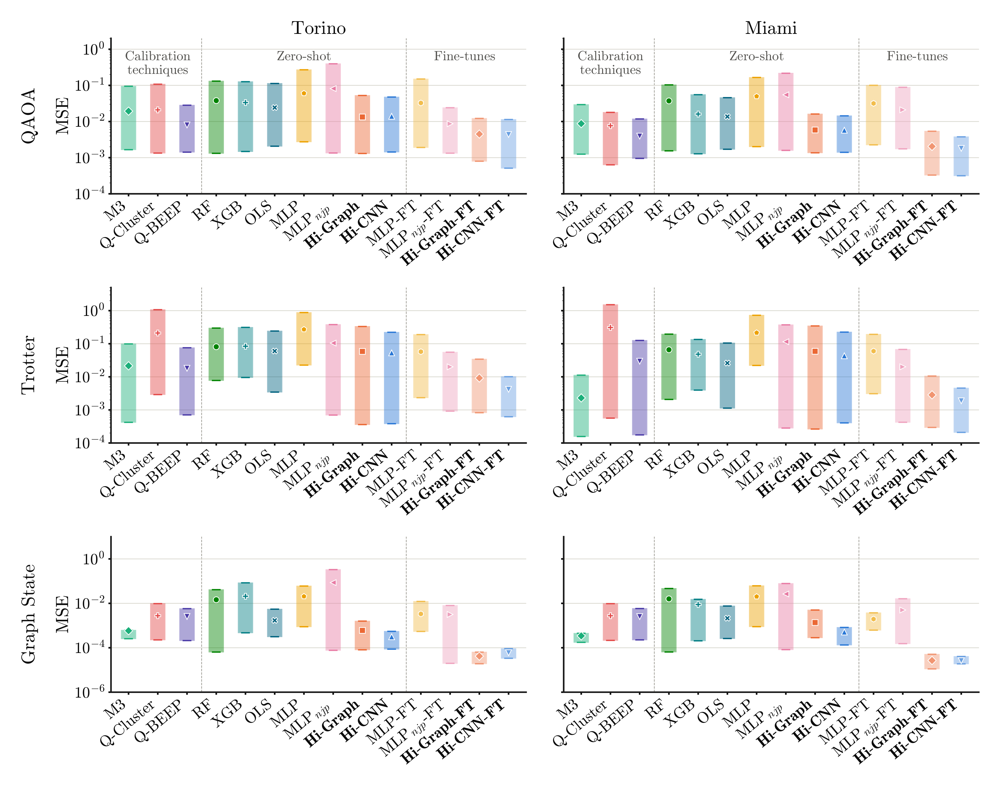
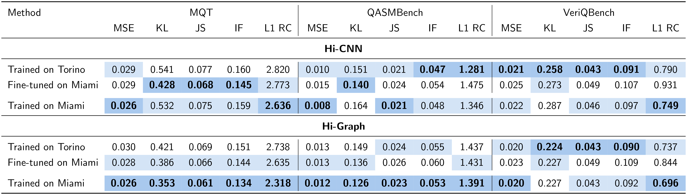
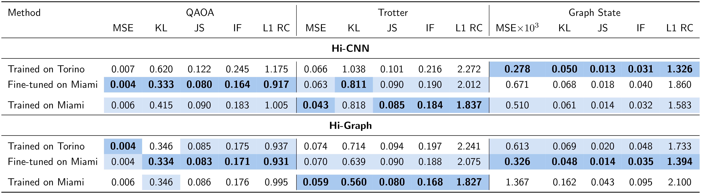

Noise remains the main obstacle to useful computation on current quantum processors. Quantum error mitigation (QEM) methods that post-process measured output distributions typically rely on calibration data or simplified noise models, while learning-based approaches can infer hardware-specific noise directly from data but are usually trained for a single register size and evaluated on the circuit families seen in training.
We introduce Hi-QEM, a device-conditioned deep learning framework for QEM of full output distributions at readout. Its hierarchical models, Hi-CNN and Hi-Graph, combine the noisy distribution with hand-crafted circuit and device features and a structural embedding of the transpiled circuit, so that a single model per device mitigates circuits of 2 to 10 qubits. The models are trained on a mixture in which 90% of the circuits are classically simulable Clifford and Matchgate circuits.
In noisy simulations of IBM Torino and IBM Miami, they achieve the lowest MSE among learning-based methods in zero-shot evaluation on MQT Bench, QASMBench and VeriQBench, up to 10× below the strongest baseline, and attain the lowest or tied MSE against calibration-based methods, in four of six settings, without calibration data at inference. After lightweight fine-tuning, they match or surpass the best calibration-based method on QAOA, Trotterized Ising, and Graph State circuits. Models trained on Torino also transfer zero-shot to Miami, a device with a different coupling map, staying within about 25% of natively trained models outside Trotterized circuits. We publicly release the benchmark, including circuits, noisy and ideal distributions, and generation code.
Hi-CNN and Hi-Graph mitigate readout noise for circuits of 2–10 qubits with a single model per device — no calibration data, no extra circuit executions at inference.
A mixture of classically-simulable Clifford and Matchgate circuits, plus a small share of Random circuits, generalizes better than any single family on real, unseen benchmarks.
Zero-shot and fine-tuned evaluation across real circuit benchmarks and structured tasks, on two IBM processors, against both learning- and calibration-based baselines — released publicly on Hugging Face.
Models trained on one processor (IBM Torino) transfer to another (IBM Miami) — a different hardware generation, a different coupling map — zero-shot and after light fine-tuning.

Hi-QEM treats readout mitigation as regression: a model takes the noisy output distribution, plus circuit/device features and a structural embedding of the circuit, and predicts the ideal distribution. The only thing that changes between the two models is how that structure gets encoded — a flat, ordered sequence through a 1D-CNN (→ Hi-CNN), or two graphs (operation flow + qubit connectivity) through a graph transformer (→ Hi-Graph).
Everything is fused into a residual correction, added back to the noisy input, and renormalized into a valid probability distribution. Crucially, each device needs just one model across the full 2–10 qubit range — not nine separate ones — at essentially no cost in accuracy.
Training draws on 54,000 circuits spanning 2–10 qubits — Clifford, Matchgate, and a small share of Random — so that 90% are classically simulable and cheap to label. Everything below is then tested zero-shot or lightly fine-tuned on circuits the models have never seen: real algorithmic benchmarks and structured downstream tasks.

Every circuit ships with full feature extraction attached: gate statistics, SupermarQ structural features before and after transpilation, QASM2.0 source, the ideal distribution, and 5,000-shot noisy readout data from the target backend.
Everything below is on two IBM backends — Torino and Miami — scored by MSE against the ideal distribution and by L1 relative change (L1 RC), where L1 RC < 1 means mitigation actually helped.
Does blending classically-simulable circuits with a small share of Random circuits help generalization?

Hi-CNN and Hi-Graph vs. training-based baselines fitted separately per Nqubits, on synthetic Random circuits.

vs. training-based baselines — MQT, QASMBench, and VeriQBench, never seen during training.


QAOA (MaxCut), Trotterized TFIM time-evolution, and Graph State preparation — zero-shot and after light fine-tuning.

Benchmark suites — MQT, QASMBench, VeriQBench.


@article{anoshin2026hiqem,
title = {Hi-QEM: Hierarchical Models and Benchmark for Learning-based
Quantum Error Mitigation at Readout},
author = {Anoshin, Matvei and Lizzio Bosco, Daniele and Serra, Giuseppe},
journal = {arXiv preprint},
year = {2026},
note = {Preprint; arXiv identifier to be assigned upon submission}
}